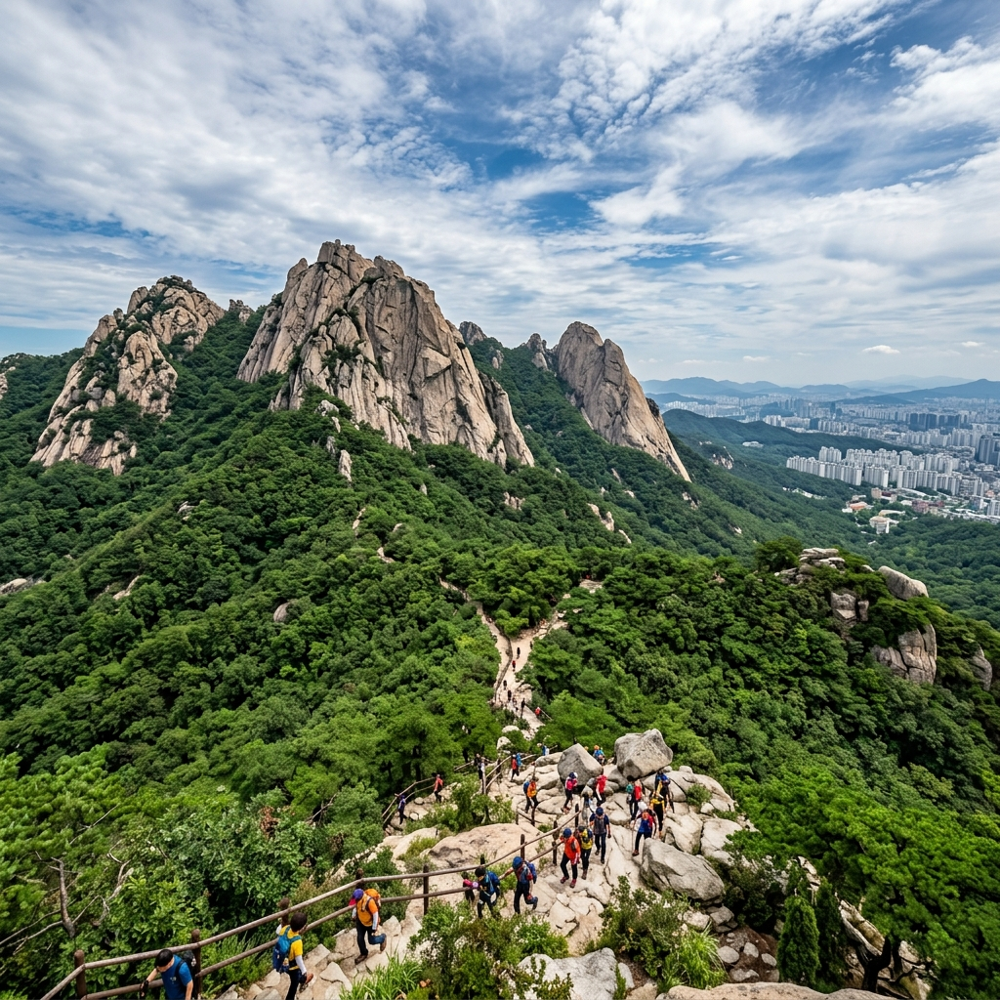
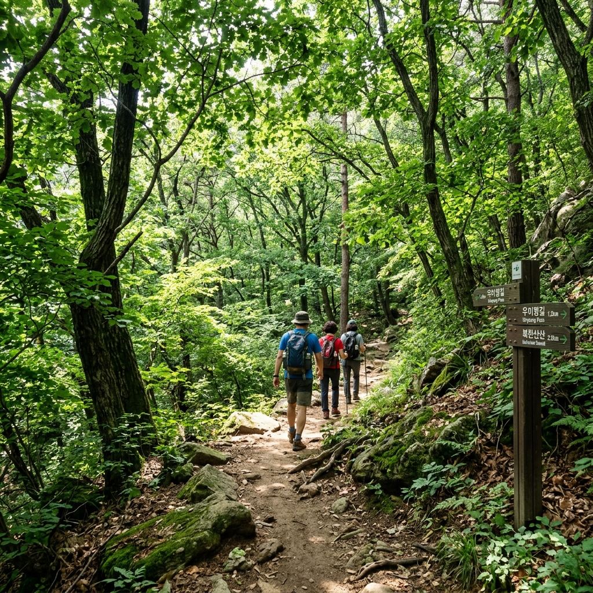
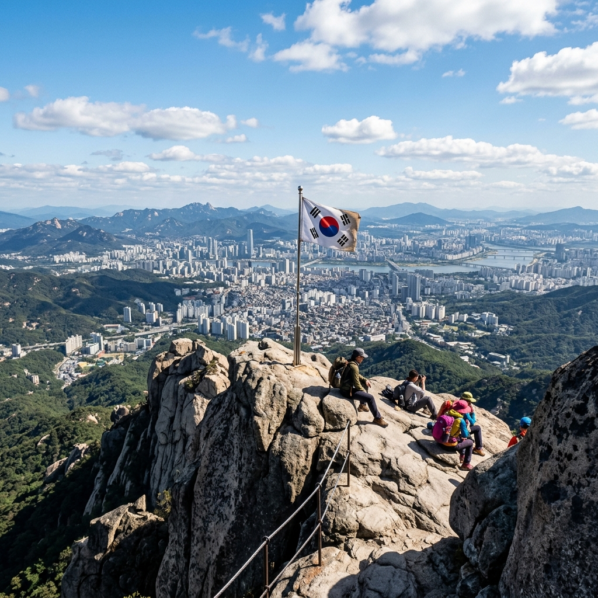

북한산 탐방 중 예약이 꼭 필요한 구간은 우이령 탐방로입니다.
1~8월과 12월의 주말, 그리고 9~11월에는 주중에도 탐방 예약을 해야만 입장이 가능합니다.
예약을 놓쳤을 때 취소 빈자리가 생기는 시간대를 알고 대기하면 당일 입장이 가능한 경우가 있습니다.
우이령 예약이 어렵다면 북한산 주요 자유 탐방 코스(백운대, 도봉산, 둘레길)가 충분히 훌륭한 대안이 됩니다.
이 글은 우이령 취소표를 노리는 실전 방법과 북한산 자유 코스를 함께 안내합니다.

국립공원 탐방예약제 대상인 북한산 우이령 탐방로는 계절에 따라 예약 요건이 달라집니다.
1~8월 및 12월: 토·일·공휴일에 한해 탐방 예약이 필요합니다. 평일은 예약 없이 자유 입장이 가능합니다.
9~11월 단풍 시즌: 주중과 주말 모두 예약제가 시행됩니다. 이 기간에는 평일이어도 예약 없이 입장할 수 없으니 주의가 필요합니다.
예약 없이 탐방 예약제 구간에 진입을 시도하면 탐방로 입구에서 입장이 불허됩니다. 미리 예약하거나 예약 없이 갈 수 있는 코스를 택하는 것이 현명합니다.
규칙이 변경될 수 있으므로 방문 전 국립공원 공식 탐방예약 시스템(reservation.knps.or.kr)의 최신 안내를 꼭 확인하세요.
우이령 탐방 예약이 꽉 찬 경우에도 취소 빈자리가 나오면 재예약할 수 있습니다.
방법 1 — 예약 시스템 주기적 확인: reservation.knps.or.kr에 로그인한 상태에서 해당 날짜의 예약 창을 주기적으로 새로고침합니다. 다른 예약자가 취소하면 자리가 열립니다.
방법 2 — 이른 아침 접속: 취소표는 늦은 밤이나 이른 아침 시간대에 올라오는 경우가 상대적으로 많습니다. 정확한 오픈 시간은 공식 사이트 공지로 확인하시기 바랍니다.
방법 3 — 예약 여유 날짜 선택: 성수기 주말보다 비수기 또는 평일(9~11월 제외)은 예약 경쟁이 덜합니다. 날짜를 조정할 수 있다면 여유 있는 날을 고르는 것이 가장 확실한 방법입니다.
예약 문의는 국립공원공단 북한산국립공원사무소(02-909-0497)로 연락할 수 있습니다.
우이령 탐방로는 서울 강북구 우이동과 경기 양주시 교현리를 연결하는 약 6.8km의 탐방로입니다.
군사보호구역으로 오랫동안 출입이 통제되어 있었기 때문에 자연이 잘 보전된 것이 특징이며, 조용하고 한적한 숲길을 걷고 싶은 탐방객에게 꾸준히 인기 있는 코스입니다.
완만한 경사가 많아 남녀노소 부담 없이 즐길 수 있으며, 봄 철쭉, 여름 초록 숲, 가을 단풍, 겨울 설경이 모두 아름답습니다.
탐방로 양쪽 끝(우이 탐방지원센터, 교현 탐방지원센터)에서 각각 예약 탐방이 가능하며, 편도 이동 후 대중교통으로 귀환하는 코스도 많이 이용됩니다.

우이령을 가지 못하더라도 북한산에서 즐길 수 있는 코스는 충분히 많습니다.
백운대 코스: 백운대 정상(836m)에 오르는 코스로 북한산 최고봉에서 서울 전경을 바라볼 수 있습니다. 예약 없이 이용 가능하며 편도 약 2시간 소요됩니다.
북한산 둘레길: 21개 구간으로 이루어진 저지대 순환 산책로입니다. 경사가 낮아 가볍게 걷기 좋으며, 원하는 구간만 선택해 이용할 수 있습니다. 예약 불필요.
인수봉·만경대 코스: 암벽등반으로 유명한 인수봉 주변을 둘러보는 코스로, 등반을 하지 않아도 암벽 풍경을 가까이에서 감상할 수 있습니다.
북한산 탐방객 안내는 국립공원 공식 앱 또는 02-909-0497로 확인할 수 있습니다.
북한산은 수도권에서 접근하기 쉬운 산이지만, 매년 안전사고가 발생하는 곳이기도 합니다.
준비물: 등산화(운동화보다 발목 보호 효과 높음), 물 충분히(여름 최소 1.5L), 간식, 비상 우비, 스틱(암봉 코스 추천), 모자, 자외선 차단제.
날씨 확인: 여름 오후에는 갑작스러운 소나기가 내릴 수 있으므로 일기예보를 확인하고 오전 출발을 권장합니다.
입산 마감 시간: 각 코스별로 일몰 전 입산 마감 시간이 정해져 있으며, 이 시간 이후에는 탐방로 입구에서 입장이 제한됩니다.
음주 금지: 국립공원 내 음주 행위는 과태료 부과 대상이며, 음주 상태의 등산은 사고 위험이 크게 높아집니다.
쓰레기 되가져오기: 탐방 중 발생한 쓰레기는 공원 내에 버리지 않고 모두 가져와야 합니다.
북한산은 여러 탐방 입구가 있어 코스에 따라 출발점이 다릅니다.
우이령 우이 탐방지원센터(서울 측): 지하철 4호선 수유역 또는 우이신설선 북한산우이역에서 버스 환승 가능.
백운대 입구(도선사 방향): 서울 수유 방향에서 버스 이용. 주차 가능하나 주말 성수기에는 일찍 소진됩니다.
북한산 둘레길: 구간별로 접근 방법이 다르므로 북한산 국립공원 공식 홈페이지에서 코스별 교통편 안내를 확인하는 것을 권장합니다.
대중교통을 적극 이용하면 주차 스트레스 없이 탐방에만 집중할 수 있습니다.

국립공원 탐방 예약은 reservation.knps.or.kr에서 진행합니다.
회원가입 후 탐방지와 날짜, 인원을 선택해 예약하며, 1인이 최대 4인까지 함께 예약할 수 있습니다.
예약 시 탐방 방향(우이 → 교현, 또는 교현 → 우이)을 선택해야 하며, 실제 탐방 당일에 예약 확인증(출력 또는 모바일)을 탐방지원센터에 제시하고 입장합니다.
예약 취소는 예약 시스템에서 직접 할 수 있으며, 취소 시 자리는 바로 재오픈됩니다. 따라서 시스템을 모니터링하는 것이 취소표를 잡는 핵심 방법입니다.
모바일 앱(국립공원 공식 앱)에서도 예약이 가능하며, 당일 탐방 여부 결정이 늦어질 때도 이른 아침 앱을 통한 취소표 확인이 편리합니다.
북한산은 계절마다 전혀 다른 모습을 보여 주어 어느 시기에 가도 즐거운 산입니다.
봄(3~5월): 진달래와 철쭉이 능선을 물들이는 시기입니다. 4~5월에 북한산 진달래 군락이 유명하며, 백운대 코스 오르는 길에서도 꽃을 즐길 수 있습니다.
여름(6~8월): 짙은 초록 숲이 시원한 그늘을 만들어 줍니다. 기온이 오르기 전 이른 아침 탐방을 권장하며, 우이령 숲길이 여름에 특히 청량합니다.
가을(9~11월): 단풍 시즌에는 탐방객이 가장 많아지는 시기입니다. 우이령 탐방 예약이 평일에도 필요한 기간이니 미리 예약을 완료하고 방문하세요.
겨울(12~2월): 설경이 아름다운 시기입니다. 겨울 등산화와 아이젠은 필수이며, 결빙 상태를 확인하고 무리한 코스는 피해야 합니다.
가장 중요한 내용을 정리합니다.
① 예약 필요 구간: 우이령 탐방로.
② 예약 필요 기간: 1~8월·12월은 주말만, 9~11월은 주중+주말 전부.
③ 예약 사이트: reservation.knps.or.kr
④ 취소표 확인: 예약 시스템에서 해당 날짜 주기적 모니터링.
⑤ 예약 불필요 코스: 백운대, 북한산 둘레길 등(입산 마감 시간 준수).
⑥ 문의: 북한산국립공원 02-909-0497